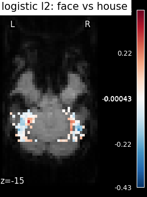
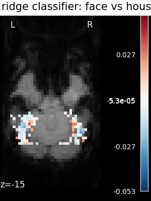
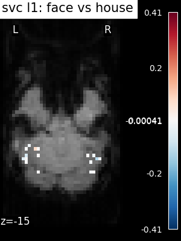
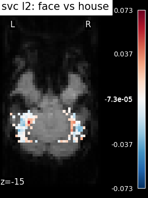

Note
Click here to download the full example code or to run this example in your browser via Binder
9.3.12. Different classifiers in decoding the Haxby dataset¶
Here we compare different classifiers on a visual object recognition decoding task.
9.3.12.1. Loading the data¶
# We start by loading data using nilearn dataset fetcher
from nilearn import datasets
from nilearn.image import get_data
# by default 2nd subject data will be fetched
haxby_dataset = datasets.fetch_haxby()
# print basic information on the dataset
print('First subject anatomical nifti image (3D) located is at: %s' %
haxby_dataset.anat[0])
print('First subject functional nifti image (4D) is located at: %s' %
haxby_dataset.func[0])
# load labels
import numpy as np
import pandas as pd
labels = pd.read_csv(haxby_dataset.session_target[0], sep=" ")
stimuli = labels['labels']
# identify resting state (baseline) labels in order to be able to remove them
resting_state = (stimuli == 'rest')
# extract the indices of the images corresponding to some condition or task
task_mask = np.logical_not(resting_state)
# find names of remaining active labels
categories = stimuli[task_mask].unique()
# extract tags indicating to which acquisition run a tag belongs
session_labels = labels['chunks'][task_mask]
# Load the fMRI data
# For decoding, standardizing is often very important
mask_filename = haxby_dataset.mask_vt[0]
func_filename = haxby_dataset.func[0]
# Because the data is in one single large 4D image, we need to use
# index_img to do the split easily.
from nilearn.image import index_img
fmri_niimgs = index_img(func_filename, task_mask)
classification_target = stimuli[task_mask]
Out:
First subject anatomical nifti image (3D) located is at: /home/circleci/nilearn_data/haxby2001/subj2/anat.nii.gz
First subject functional nifti image (4D) is located at: /home/circleci/nilearn_data/haxby2001/subj2/bold.nii.gz
9.3.12.2. Training the decoder¶
# Then we define the various classifiers that we use
classifiers = ['svc_l2', 'svc_l1', 'logistic_l1',
'logistic_l2', 'ridge_classifier']
# Here we compute prediction scores and run time for all these
# classifiers
import time
from nilearn.decoding import Decoder
from sklearn.model_selection import LeaveOneGroupOut
cv = LeaveOneGroupOut()
classifiers_data = {}
for classifier_name in sorted(classifiers):
print(70 * '_')
# The decoder has as default score the `roc_auc`
decoder = Decoder(estimator=classifier_name, mask=mask_filename,
standardize=True, cv=cv)
t0 = time.time()
decoder.fit(fmri_niimgs, classification_target, groups=session_labels)
classifiers_data[classifier_name] = {}
classifiers_data[classifier_name]['score'] = decoder.cv_scores_
print("%10s: %.2fs" % (classifier_name, time.time() - t0))
for category in categories:
print(" %14s vs all -- AUC: %1.2f +- %1.2f" % (
category,
np.mean(classifiers_data[classifier_name]['score'][category]),
np.std(classifiers_data[classifier_name]['score'][category]))
)
# Adding the average performance per estimator
scores = classifiers_data[classifier_name]['score']
scores['AVERAGE'] = np.mean(list(scores.values()), axis=0)
classifiers_data[classifier_name]['score'] = scores
Out:
______________________________________________________________________
logistic_l1: 12.42s
scissors vs all -- AUC: 0.92 +- 0.05
face vs all -- AUC: 0.98 +- 0.02
cat vs all -- AUC: 0.96 +- 0.04
shoe vs all -- AUC: 0.92 +- 0.08
house vs all -- AUC: 1.00 +- 0.00
scrambledpix vs all -- AUC: 0.99 +- 0.01
bottle vs all -- AUC: 0.90 +- 0.08
chair vs all -- AUC: 0.91 +- 0.06
______________________________________________________________________
logistic_l2: 36.88s
scissors vs all -- AUC: 0.91 +- 0.08
face vs all -- AUC: 0.97 +- 0.04
cat vs all -- AUC: 0.97 +- 0.03
shoe vs all -- AUC: 0.92 +- 0.09
house vs all -- AUC: 1.00 +- 0.00
scrambledpix vs all -- AUC: 0.96 +- 0.11
bottle vs all -- AUC: 0.82 +- 0.18
chair vs all -- AUC: 0.89 +- 0.18
______________________________________________________________________
ridge_classifier: 12.08s
scissors vs all -- AUC: 0.91 +- 0.08
face vs all -- AUC: 0.96 +- 0.03
cat vs all -- AUC: 0.91 +- 0.07
shoe vs all -- AUC: 0.91 +- 0.07
house vs all -- AUC: 1.00 +- 0.00
scrambledpix vs all -- AUC: 0.99 +- 0.01
bottle vs all -- AUC: 0.85 +- 0.10
chair vs all -- AUC: 0.91 +- 0.06
______________________________________________________________________
svc_l1: 22.64s
scissors vs all -- AUC: 0.92 +- 0.05
face vs all -- AUC: 0.98 +- 0.03
cat vs all -- AUC: 0.96 +- 0.04
shoe vs all -- AUC: 0.92 +- 0.07
house vs all -- AUC: 1.00 +- 0.00
scrambledpix vs all -- AUC: 0.99 +- 0.01
bottle vs all -- AUC: 0.89 +- 0.08
chair vs all -- AUC: 0.93 +- 0.04
______________________________________________________________________
svc_l2: 58.24s
scissors vs all -- AUC: 0.90 +- 0.09
face vs all -- AUC: 0.96 +- 0.05
cat vs all -- AUC: 0.96 +- 0.04
shoe vs all -- AUC: 0.91 +- 0.08
house vs all -- AUC: 1.00 +- 0.00
scrambledpix vs all -- AUC: 0.96 +- 0.10
bottle vs all -- AUC: 0.82 +- 0.17
chair vs all -- AUC: 0.87 +- 0.16
9.3.12.3. Visualization¶
# Then we make a rudimentary diagram
import matplotlib.pyplot as plt
plt.figure(figsize=(6, 6))
all_categories = np.sort(np.hstack([categories, 'AVERAGE']))
tick_position = np.arange(len(all_categories))
plt.yticks(tick_position + 0.25, all_categories)
height = 0.1
for i, (color, classifier_name) in enumerate(zip(['b', 'm', 'k', 'r', 'g'],
classifiers)):
score_means = [
np.mean(classifiers_data[classifier_name]['score'][category])
for category in all_categories
]
plt.barh(tick_position, score_means,
label=classifier_name.replace('_', ' '),
height=height, color=color)
tick_position = tick_position + height
plt.xlabel('Classification accuracy (AUC score)')
plt.ylabel('Visual stimuli category')
plt.xlim(xmin=0.5)
plt.legend(loc='lower left', ncol=1)
plt.title(
'Category-specific classification accuracy for different classifiers')
plt.tight_layout()
We can see that for a fixed penalty the results are similar between the svc and the logistic regression. The main difference relies on the penalty ($ell_1$ and $ell_2$). The sparse penalty works better because we are in an intra-subject setting.
9.3.12.4. Visualizing the face vs house map¶
Restrict the decoding to face vs house
condition_mask = np.logical_or(stimuli == 'face', stimuli == 'house')
stimuli = stimuli[condition_mask]
assert len(stimuli) == 216
fmri_niimgs_condition = index_img(func_filename, condition_mask)
session_labels = labels['chunks'][condition_mask]
categories = stimuli.unique()
assert len(categories) == 2
for classifier_name in sorted(classifiers):
decoder = Decoder(estimator=classifier_name, mask=mask_filename,
standardize=True, cv=cv)
decoder.fit(fmri_niimgs_condition, stimuli, groups=session_labels)
classifiers_data[classifier_name] = {}
classifiers_data[classifier_name]['score'] = decoder.cv_scores_
classifiers_data[classifier_name]['map'] = decoder.coef_img_['face']
Finally, we plot the face vs house map for the different classifiers Use the average EPI as a background
from nilearn.image import mean_img
from nilearn.plotting import plot_stat_map, show
mean_epi_img = mean_img(func_filename)
for classifier_name in sorted(classifiers):
coef_img = classifiers_data[classifier_name]['map']
threshold = np.max(np.abs(get_data(coef_img))) * 1e-3
plot_stat_map(
coef_img, bg_img=mean_epi_img, display_mode='z', cut_coords=[-15],
threshold=threshold,
title='%s: face vs house' % classifier_name.replace('_', ' '))
show()
- 
- 
- 
- 
Total running time of the script: ( 2 minutes 49.853 seconds)
Estimated memory usage: 1256 MB